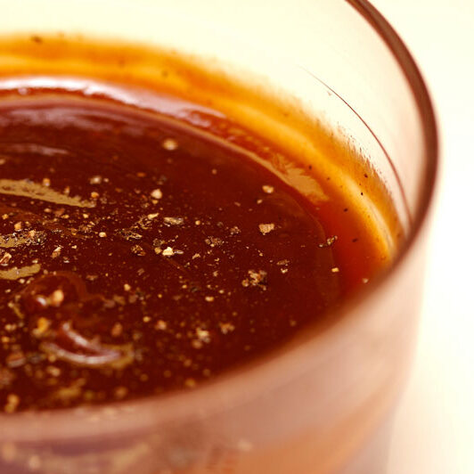

Delicious Whiskey Bourbon BBQ Sauce!
This recipe is adapted from
AllRecipes
.
Links
Recipe 1 (Main Page)
Recipe 2
Recipe 3

Homemade Whiskey Bourbon BBQ Sauce
Rate & Convert
Rate this recipe:
Easy
Intermediate
Hard
Conversion
Tablespoons:
=
Cups:
Ingredients
¾ cup bourbon whiskey
4 cloves garlic, minced
½ onion, minced
2 cups ketchup
½ cup brown sugar
⅓ cup cider vinegar
Equipment
Large skillet
Mixing spoon
Measuring cups
Knife
Directions
Simmer bourbon, garlic, and onion until soft.
Add ketchup, sugar, vinegar, and spices.
Simmer for 20 minutes and serve.